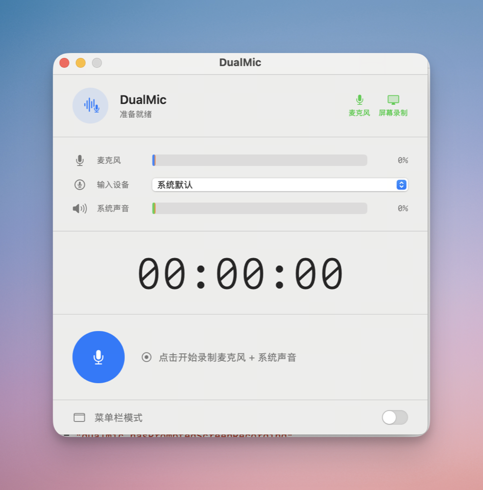

麦克风 + 系统声音
两路声音同步捕获，结束后自动混合。耳机里的对话，也会进入最终录音。
Mic + System Audio / macOS
DualMic 同时捕获麦克风与系统声音，在本机混合导出为一份清晰的 M4A。为视频面试、线上会议和课程复盘而做。

01 / Core features
从输入设备、实时电平到暂停继续和本地保存，录制需要的关键动作都集中在一个原生窗口里。
两路声音同步捕获，结束后自动混合。耳机里的对话，也会进入最终录音。
临时中断不用重开文件，继续录制后不产生时间断层。
录制前先看声音有没有进来，避免结束后才发现漏录。
隐藏 Dock 图标，长时间面试或会议时不打扰当前工作；多个麦克风也可在开始前自由切换。
02 / App preview
选择下方状态，查看 DualMic 从准备、录制到保存的真实界面。
03 / Get started
不需要虚拟声卡，也不用配置复杂的音频路由。下载应用、授权两项系统权限，就可以开始。
从 Releases 下载最新版，将 DualMic 拖入 /Applications。
麦克风用来录你的声音；“屏幕录制”权限由 macOS 用来允许 ScreenCaptureKit 捕获系统音频。
选择输入设备，确认两条电平都有响应。结束后 DualMic 会自动混合并让你选择保存位置。
04 / Local first
声音在本机捕获、混合和导出。没有账号，没有云端上传；保存位置由你决定，最终得到通用的 AAC 编码 M4A 文件。
05 / FAQ
这是 macOS 对未公证第三方应用的隔离提示。将 DualMic 放入“应用程序”后，可以在终端清除它的隔离属性；命令末尾保留一个空格，再把 DualMic.app 拖进终端，然后回车。
sudo xattr -r -d com.apple.quarantine /Applications/DualMic.app不会。DualMic 只从 ScreenCaptureKit 接收系统音频，不保存任何屏幕视频。macOS 将这项能力统一放在“屏幕录制”权限中，所以首次使用仍需要授权。
可以。在开始录制前点击“系统声音”一行将其关闭，DualMic 就只会保留麦克风输入。
需要 macOS 14 Sonoma 或更高版本，支持 Apple Silicon 与 Intel Mac。自行编译需要 Xcode 16 或更高版本。
停止录制后，两路音频会在本地自动混合，并导出为 AAC 编码、192 kbps 的 .m4a 文件。
免费下载、开源、本地运行。装好后只需要一次权限授权。
下载 DualMic